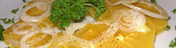

Orangen-Zwiebelsalat
4,5 von 6mit einem scharfen messer die haut orangen abschneiden und in feine scheiben schneiden und auf einem teller anrichten. zwiebelringe darüber geben und mit ein wenig olivenöl, zitronensaft, salz und pfeffer würzen.
